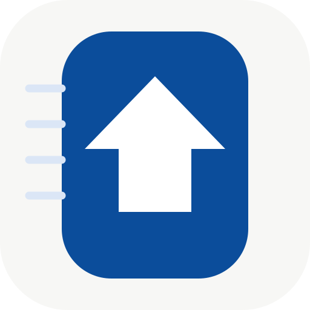

OCR A/B 对比
同一张图片，两种识别方式并排对比 · 全程本地 · 不上传
本地识别引擎
不联网、无 Token
此页只用于诊断，不会写入你的笔记。
PP-OCRv4 (ONNX) 本地引擎
A 列：直接识别原图。B 列：先做图像增强（增强预处理 / Otsu 二值化）再识别。
两列用的是同一个模型，只是输入图像不同 —— 用来判断是「图太糊」还是「模型不认」。
拖入截图，或点击选择图片
也支持直接 Ctrl / ⌘ + V 粘贴剪贴板图片